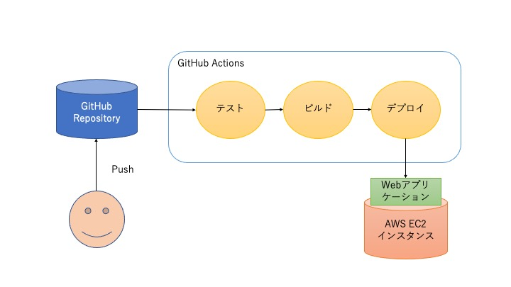

この研修では、CI/CDについて学んでいきます。
ビルド・テストの過程を自動化
リリース準備もしくはデプロイの過程を自動化
CI/CDに必要なのは自動テスト
単純な構成のGo言語を利用したWebアプリケーションの作成〜テスト〜デプロイまでをGitHub Actions を用いて自動化を行います。

Go言語を利用します。かんたんなコードなのでGo言語の事前知識なくても大丈夫かと思います。
テスト内容については雰囲気だけにとどめます。
EC2 にビルドしたバイナリデータを配置して実行します。
自身のアカウントのホームから
リポジトリ名 | cicd_training |
公開設定 | private |
表示されるSetup方法を参考に進める。
Actions は GitHub Actions で使えるライブラリみたいなものです。
下記のファイルをプロジェクトのルートに作成しましょう。
package main
import (
"fmt"
"log"
"net/http"
)
func handler(w http.ResponseWriter, r *http.Request) {
text := "CI/CD Training."
fmt.Fprint(w, "This is ", text)
}
func main() {
http.HandleFunc("/", handler)
log.Fatal(http.ListenAndServe(":8080", nil))
}package main
import (
"testing"
)
func Test(t *testing.T) {
t.Fatal("test failed.")
}下記のコマンドでビルドと実行ができます。ローカル環境に go がある方は試してみましょう（任意）
ブラウザで http://localhost:8080/ にアクセスして表示を確認してみましょう。
server は Ctrl + C で終了します。
ビルドした server バイナリデータはデータサイズが大きいので git push しないように注意してください。
name: deploy
on:
push:
branches:
- main
jobs:
mainflow:
runs-on: ubuntu-latest
steps:
- uses: actions/setup-go@v2.1.5
with:
go-version: "1.17"
- uses: actions/checkout@v2.4.0
- name: Test
run: |
go mod init cicd_training
go test ./...package main
import (
"testing"
)
func Test(t *testing.T) {
//t.Fatal("test failed.")
}デプロイ先のEC2インスタンスを作成します。
タイプ | カスタム TCP |
プロトコル | TCP |
ポート範囲 | 8080 |
ソース | カスタム 0.0.0.0/0 |
キーペアのタイプ | RSA |
キーペア名 | cicd_training |
デプロイ先のEC2インスタンスの情報をリポジトリ Secrets に設定します。
USER_NAME | ec2-user |
HOST_NAME | <パブリック IPv4 DNS> |
PRIVATE_KEY | <cicd_training.pemの内容> |
name: deploy
on:
push:
branches:
- main
jobs:
mainflow:
runs-on: ubuntu-latest
steps:
- uses: actions/setup-go@v2.1.5
with:
go-version: "1.17"
- uses: actions/checkout@v2.4.0
- name: Test
run: |
go mod init cicd_training
go test ./...
# ここから追加
- name: Build
run: go build server.go
- name: Deploy
env:
PRIVATE_KEY: ${{ secrets.PRIVATE_KEY }}
USER_NAME: ${{ secrets.USER_NAME }}
HOST_NAME: ${{ secrets.HOST_NAME }}
run: |
echo "${PRIVATE_KEY}" > private_key && chmod 600 private_key
ssh -oStrictHostKeyChecking=no -i private_key ${USER_NAME}@${HOST_NAME} 'kill `/usr/sbin/lsof -i:8080 | grep server | awk "{print \$2}"` 2>/dev/null' || true
scp -oStrictHostKeyChecking=no -i private_key server ${USER_NAME}@${HOST_NAME}:
ssh -oStrictHostKeyChecking=no -i private_key -f ${USER_NAME}@${HOST_NAME} './server &'既存プロセスの停止、ビルドしたバイナリデータをscp転送、サーバのバックグランド起動、の順で行っています。
今回は簡易的なデプロイで許容としましたが、ダウンタイムが長いので実際には安全なリスタートが必要になります。
Settings > General > Danger Zone > Delete this repository
EC2対象インスタンス > セキュリティ > セキュリティグループ > 対象のセキュリティグループ名